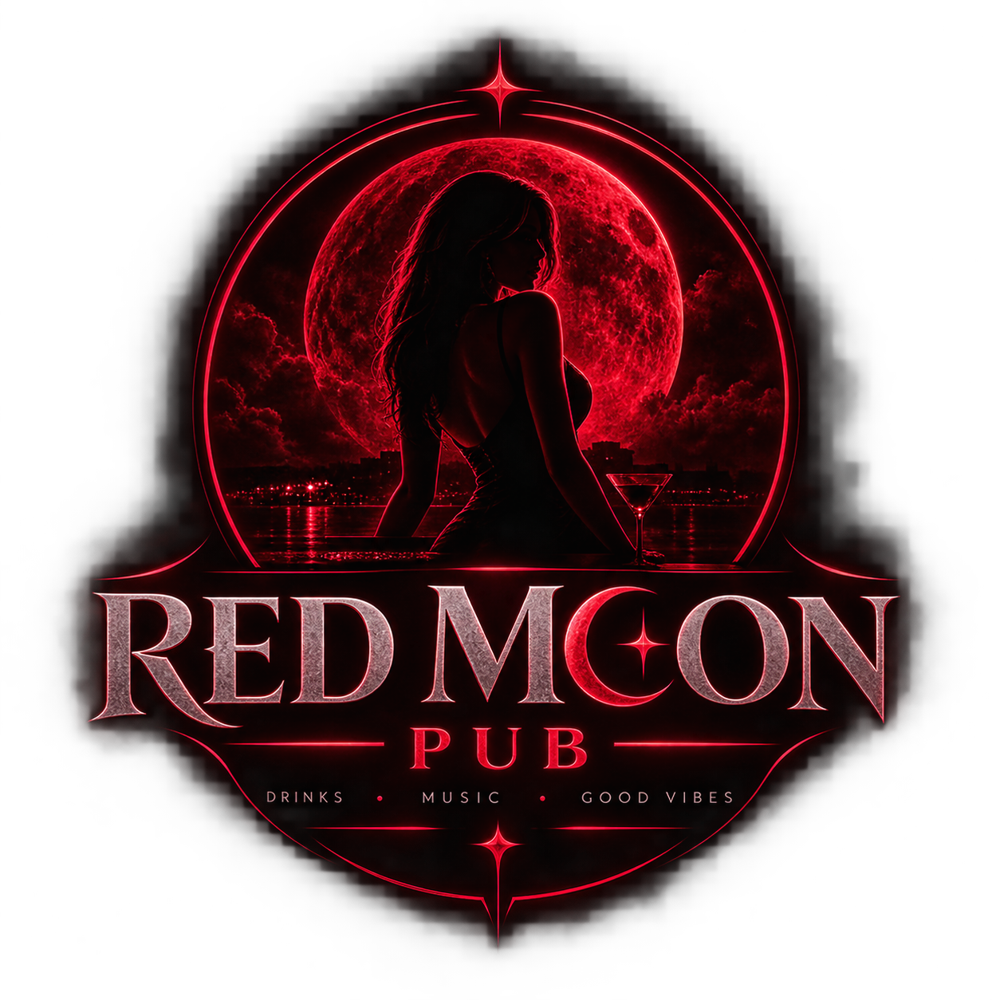

RED MOON / 06
LOKÁCIÓ & GPS
A Red Moon Pub pontos helye SeeCity-ben. A térkép a megadott helyszínt mutatja, a GPS-jel pedig a kocsma valódi pozíciójára került.
RED MOON PUBSEE CITY · FIX HELY

RED MOON PUBA Red Moon Pub pontos helye SeeCity-ben. A térkép a megadott helyszínt mutatja, a GPS-jel pedig a kocsma valódi pozíciójára került.